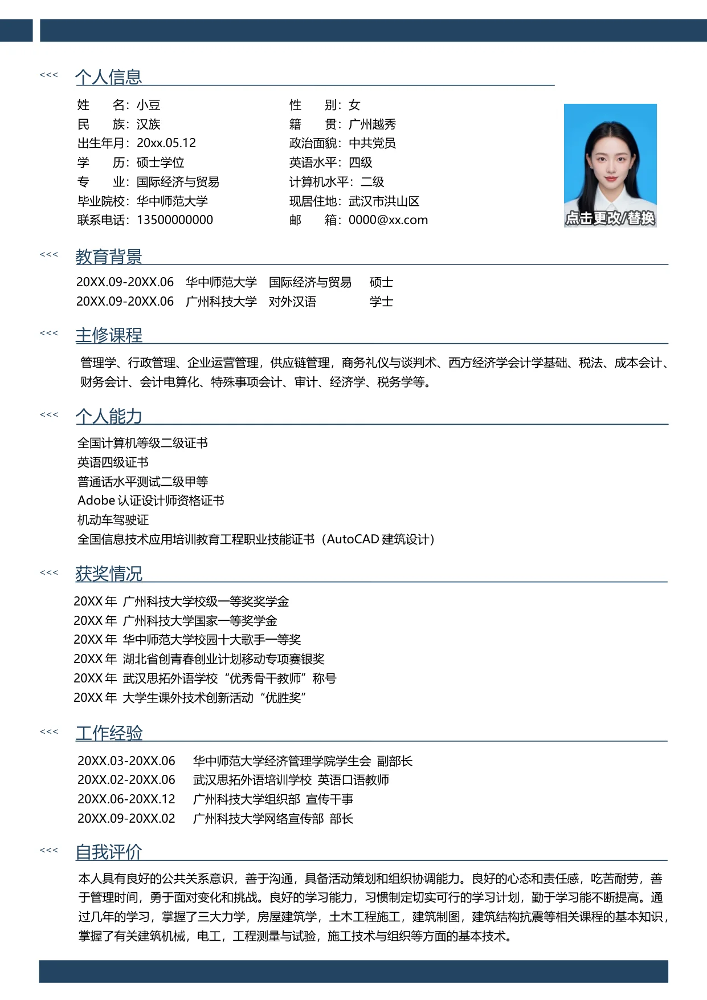

20XX.09-20XX.06 华中师范大学 国际经济与贸易 硕士
20XX.09-20XX.06 广州科技大学 对外汉语 学士
管理学、行政管理、企业运营管理，供应链管理，商务礼仪与谈判术、西方经济学会计学基础、税法、成本会计、
财务会计、会计电算化、特殊事项会计、审计、经济学、税务学等。
20XX 年 广州科技大学校级一等奖奖学金
20XX 年 广州科技大学国家一等奖学金
20XX 年 华中师范大学校园十大歌手一等奖
20XX 年 湖北省创青春创业计划移动专项赛银奖
20XX 年 武汉思拓外语学校“优秀骨干教师”称号
20XX 年 大学生课外技术创新活动“优胜奖”
20XX.03-20XX.06 华中师范大学经济管理学院学生会 副部长
20XX.02-20XX.06 武汉思拓外语培训学校 英语口语教师
20XX.06-20XX.12 广州科技大学组织部 宣传干事
20XX.09-20XX.02 广州科技大学网络宣传部 部长
姓 名：小豆
民 族：汉族
出生年月：20xx.05.12
学 历：硕士学位
专 业：国际经济与贸易
毕业院校：华中师范大学
联系电话：13500000000
性 别：女
籍 贯：广州越秀
政治面貌：中共党员
英语水平：四级
计算机水平：二级
现居住地：武汉市洪山区
邮 箱：0000@xx.com
<<<
个人信息
<<<
教育背景
主修课程
<<<
个人能力
<<<
全国计算机等级二级证书
英语四级证书
普通话水平测试二级甲等
Adobe 认证设计师资格证书
机动车驾驶证
全国信息技术应用培训教育工程职业技能证书（AutoCAD 建筑设计）
获奖情况
<<<
工作经验
<<<
自我评价
<<<
本人具有良好的公共关系意识，善于沟通，具备活动策划和组织协调能力。良好的心态和责任感，吃苦耐劳，善
于管理时间，勇于面对变化和挑战。良好的学习能力，习惯制定切实可行的学习计划，勤于学习能不断提高。通
过几年的学习，掌握了三大力学，房屋建筑学，土木工程施工，建筑制图，建筑结构抗震等相关课程的基本知识，
掌握了有关建筑机械，电工，工程测量与试验，施工技术与组织等方面的基本技术。